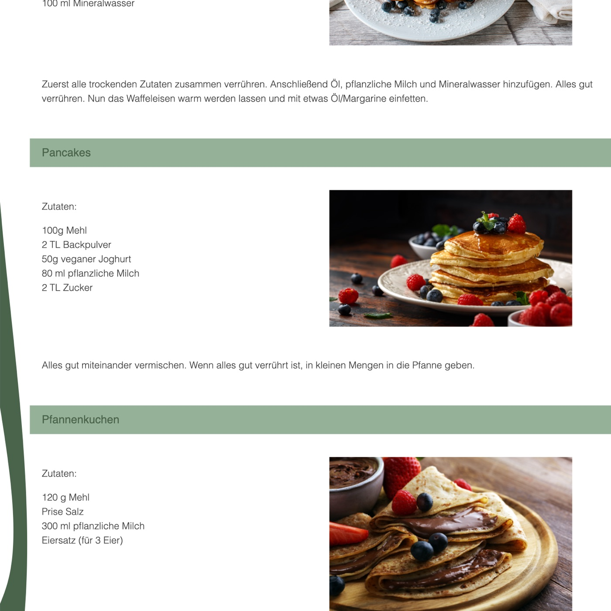
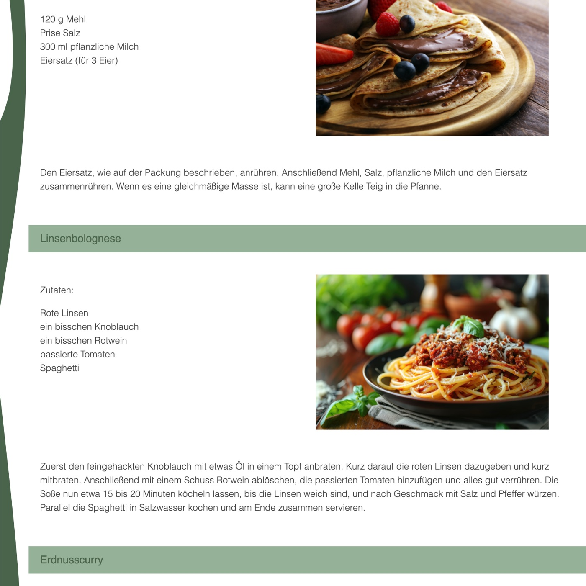
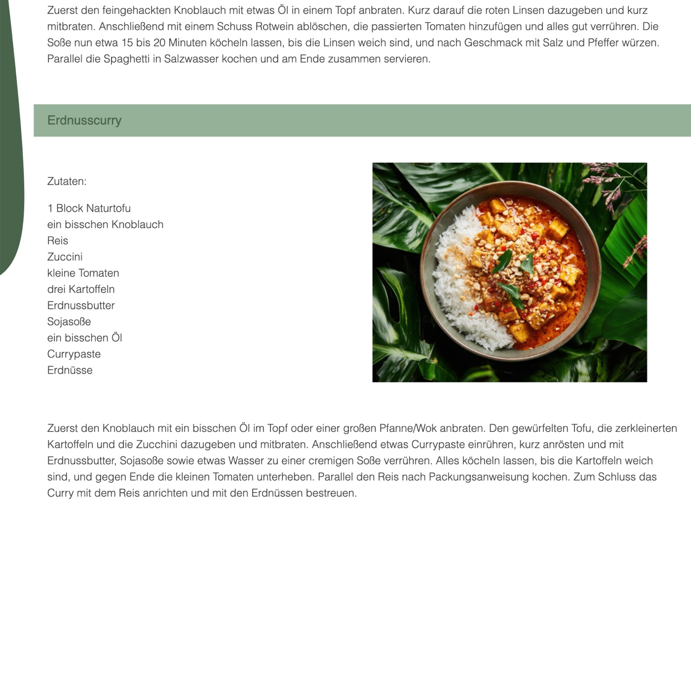

Website vegane Rezepte
Für die Fansite „Plant based“ habe ich eine Sammlung einfacher veganer Rezepte gestaltet und mit HTML und CSS umgesetzt – von Waffeln, Pancakes und Pfannenkuchen bis zu Linsenbolognese und Erdnusscurry. Texte und Logo sind selbst geschrieben und gestaltet, geschwungene Formen in Grüntönen ziehen sich als grafisches Element durch die Seite.



